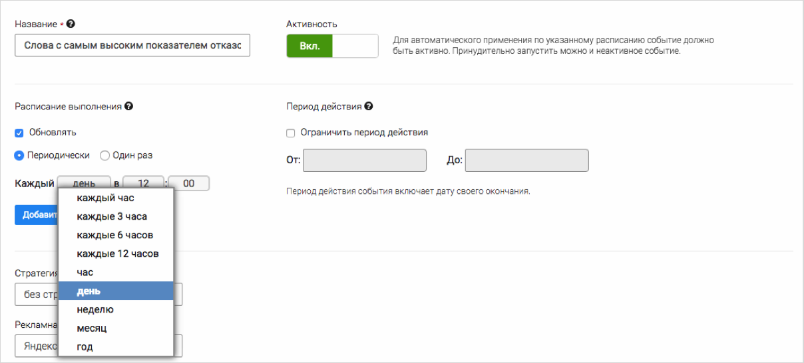
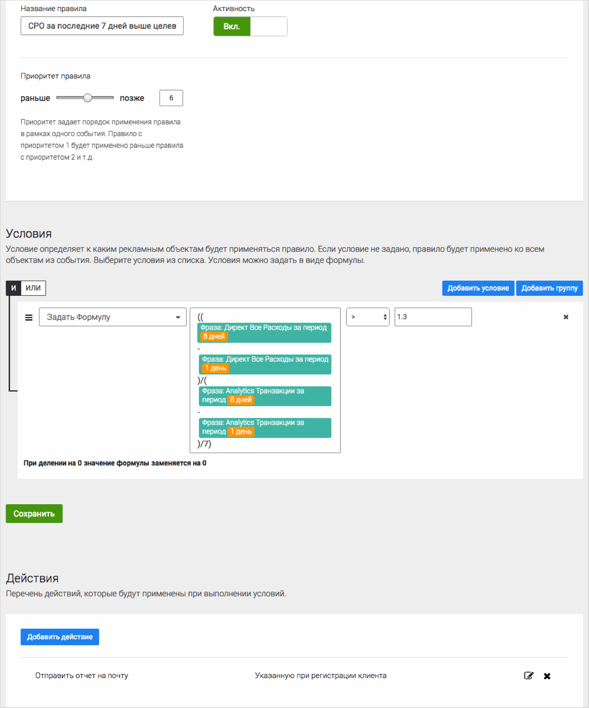
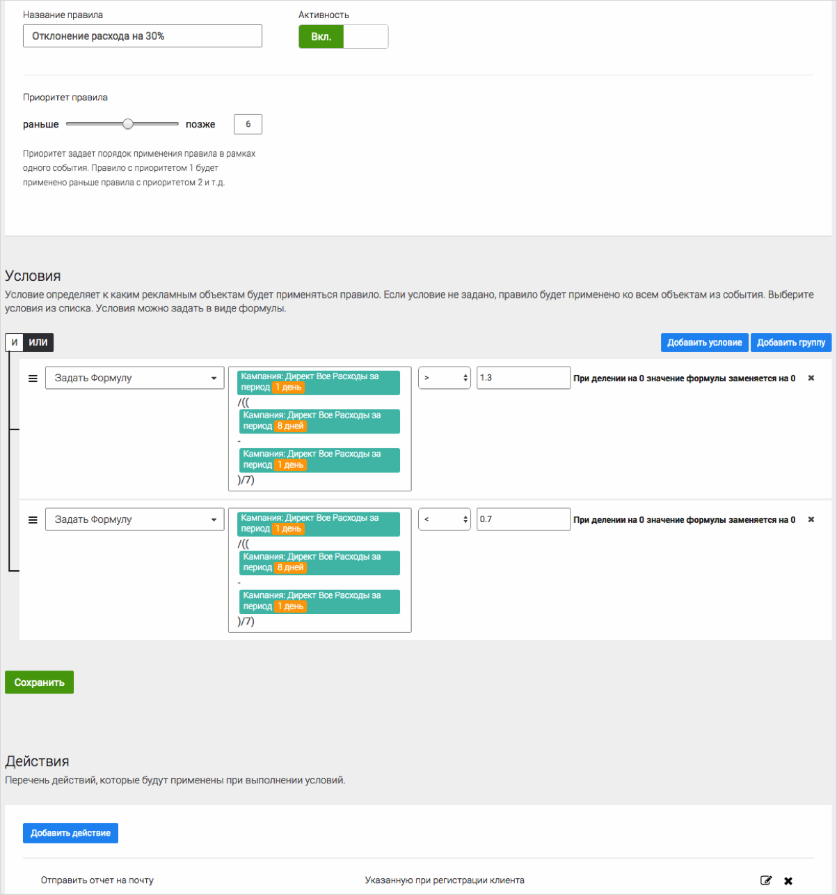
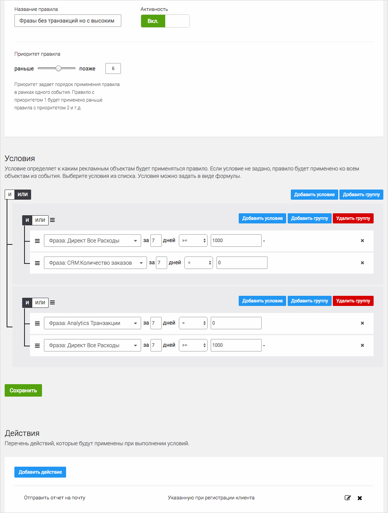
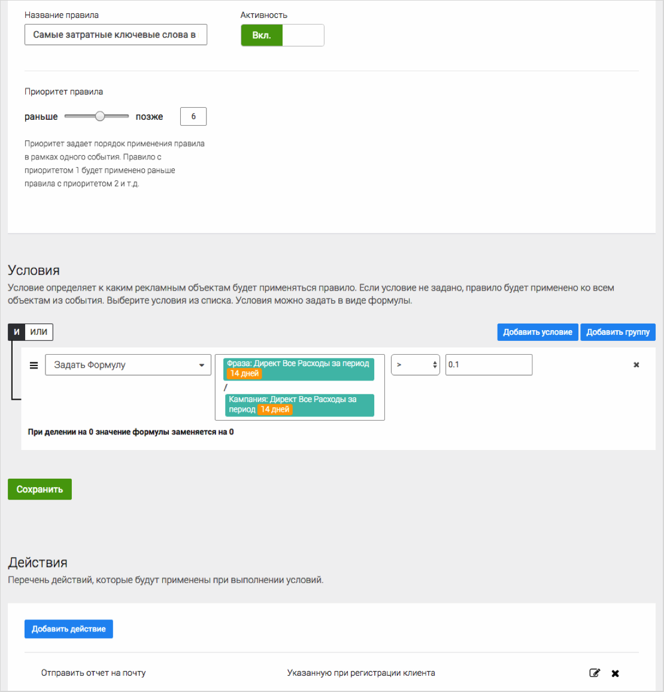
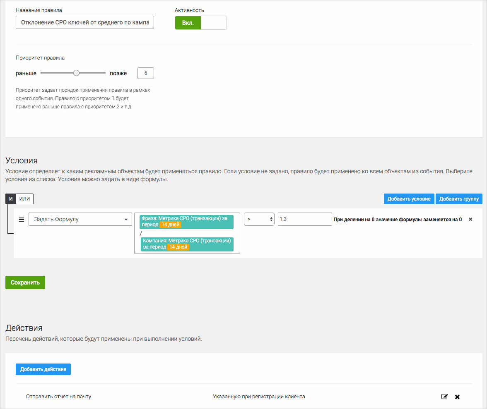

Правила для регулярного мониторинга эффективности кампании
Приведем несколько примеров отчетов в К50:Правила, которые позволяют следить за изменениями в рекламных кампаниях и не допускать неэффективного расходования бюджета.
Регулярность их выполнения возможна, благодаря настройке "Расписание выполнения", например, отправка определенного отчета, изменение ставок или остановка рекламных материалов раз в день/неделю/месяц. Для выбора периодичности достаточно в соответствующем разделе настройки событий выбрать необходимый период.

Фразы, по которым за последние 7 дней CPO выше целевого на 30%
Функционал К50:Правила позволяет сравнивать различные показатели (расход, клики, количество конверсий и т.д.) за разные периоды времени.
В данном примере мы сравниваем CPO за вчерашний день со средним CPO последней недели и отправляем на почту отчет с фразами, по которым CPO был превышен на 30%.

Фразы, по которым расход на 30% больше или меньше, чем на прошлой неделе
Еще одно правило с использованием формулы сравнения периода. С помощью такого правила можно находить кампании, по которым дневной расход превысил или сократился на 30% по сравнению с последней неделей.
Отчет интересен в обоих вариантах, как в случае изменения расхода в большую, так и в меньшую сторону. О чем могут говорить изменения в расходе:
- отклонение ряда объявлений
- появление нового конкурента в вашей тематике
- появление слишком общих и ВЧ ключевых слов (возможно при автоматической генерации)

Фразы без транзакций или без звонков, но с высоким расходом
Важное Правило для поиска неконверсионных ключевых слов в рекламной кампании. Позволяет одновременно находить:
- фразы с высоким расходом, которые не приносят транзакций
- фразы с высоким расходом, которые не приносят звонков (необходимо подключение call-tracking)

Самые затратные ключевые слова в кампании / аккаунте
Правило ищет самые дорогие ключевые слова в кампании. В данном примере это фразы, по которым расход более 10% от расходов кампании. В это правило можно добавлять дополнительные условия, например:
- превышение целевого CPO
-
отсутствие транзакций и звонков
Или менять само условие: -
самые расходные объявления в кампании
- самые расходные кампании в аккаунте

Отклонение CPO ключей от среднего показателя CPO по кампании
Поиск ключевых слов в кампании, по которым CPO выше среднего по кампании.
